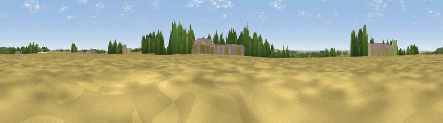

Viewpoint near Fulbeck
#29836 in England · top 44% of its area beats it · near FulbeckThe view, rendered

A 360° render of this exact spot computed from the terrain model, tree cover and land cover — summer colours, afternoon light, calibrated against photographs of famous viewpoints. Real trees, hedges and buildings will differ in detail.
The panorama
Grey silhouette: terrain skyline in each direction (720 bearings, Earth curvature and refraction included). Dashed green: skyline with trees (+15 m) and buildings (+8 m) as obstacles. Blue strip: how far the ground is visible on each bearing.
Where the view opens
Wedge length = distance to the farthest visible ground on that bearing (vegetation-aware). Rings at 10, 25 and 50 km.
What fills the view
70% cropland · 16% grassland · 9% woodland · 4% built-up
Angular shares of the visible panorama (visual magnitude), not map area. Landscape diversity 0.39 (0–1 Shannon).
Key numbers
More beautiful places nearby
The staircase of upgrades: each row has a higher view potential than everything closer. Driving times are estimates from straight-line distance, calibrated against real road routing — check an actual route before setting out.
| Place | Direction | Drive | Score |
|---|---|---|---|
| Normanton Hill | S · 2 km | ~5 min | 49.8 |
| Viewpoint near Caythorpe | W · 3 km | ~7 min | 49.9 |
| Summerfield's Hill | SW · 6 km | ~13 min | 51.5 |
| Viewpoint near Wellingore | NNE · 8 km | ~17 min | 52.5 |
| Viewpoint near Great Gonerby | SW · 11 km | ~21 min | 62.0 |
| Viewpoint near Belvoir | SW · 20 km | ~34 min | 70.8 |
| Viewpoint near Claxby | NNE · 49 km | ~70 min | 71.5 |
| Viewpoint near Woodhouse Eaves | SW · 56 km | ~78 min | 77.7 |
53.02593, -0.57209 · source: osm peak · position refined by local search. Computed location — check access rights before visiting.